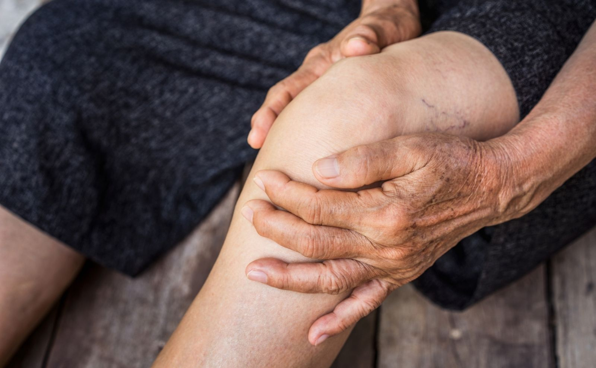

Tratamentos
Osteoartrose ou Osteoartrite

O que é?
A osteoartrose ou Osteoartrite neste artigo são termos sinônimos para designar uma alteração articular que pode tornar as articulações rígidas e doloridas. Isso pode dificultar fazer as coisas do dia a dia, como levantar de uma cadeira, amarrar um cadarço, caminhar etc. Embora a osteoartrose não possa ser curada, existem tratamentos que podem ajudar a aliviar os sintomas e movimentar com mais facilidade.
O que acontece na osteoartrose?
A osteoartrose é uma doença que afeta as articulações. É mais comum nas articulações dos joelhos, quadris, mãos e coluna vertebral. A osteoartrose ocorre quando a cartilagem nas extremidades dos ossos é danificada. Cartilagem é um material branco, duro e escorregadio que cobre as extremidades de um osso onde encontra com outro osso. Isto permite que os ossos se movam suavemente uns contra com os outros sem esfregar. Quando a cartilagem é danificada, torna-se rugosa e irregular, e o osso em suas articulações tenta reparar o dano (o osso pode crescer e se consertar). Mas em vez de tornar as coisas melhores, na osteoartrose o osso cresce anormalmente e torna as coisas piores. Por exemplo, o osso pode crescer de uma forma anormal, e tornar a articulação dolorida, mais rígida em algumas situações até instável. Ninguém realmente entende por que o osso faz isso. E não está claro se o dano à cartilagem acontece antes ou depois de o osso crescer de forma anormal. Embora a osteoartrose não seja causada simplesmente pelo envelhecimento ou pelo desgaste da cartilagem, ela é mais comum em pessoas mais velhas. Outros fatores que favorecem a piora são:
- Estar acima do peso
- Não fazer atividade física
- Ser mulher
- Ter osteoartrite em sua família
Quais são os sintomas?
Os sintomas da osteoartrose geralmente aparecem gradualmente, às vezes ao longo de muitos anos. Os mais comuns são:
- Dor. Isso pode ser constante ou pode acontecer apenas quando você usa uma determinada articulação. Pode ser dor tipo pontada, queimando ou fincando;
- Rigidez. Isso geralmente é pior na primeira hora da manhã;
- Problemas de movimentação: por exemplo, você pode achar difícil subir escadas ou alcançar uma prateleira alta;
- Articulações inchadas;
- Uma sensação de esmagamento nas articulações ao movê-las;
- Articulações nodosas;
- Fraqueza muscular ao redor de uma articulação afetada.
O seu médico irá perguntar sobre os seus sintomas e olhar para as suas articulações. Ele também pode solicitar alguns exames, como raio-x e exame de sangue, para verificar se seus sintomas são causados por osteoartrose ou se alguma outra coisa as pode estar causando.
O que vai acontecer comigo?
A osteoartrose é uma doença que geralmente progride muito lentamente, as vezes ao longo muitos anos, mas não é regra, nem sempre isto acontece, pode desenvolver mais rápido. A dor e a rigidez podem até melhorar com o tempo, principalmente com o tratamento. Mas é difícil o seu médico prever exatamente o que acontecerá com você. As pesquisas sugerem que você pode evitar o desenvolvimento de sintomas graves, mantendo seu peso em um nível saudável, exercitando corretamente dentro dos seus limites.
Para obter mais informações sobre os tratamentos disponíveis da osteoartrose e osteoartrite, consulte a um médico ortopedista.
Tratamento funciona?
Não há cura para a osteoartrose, mas existem tratamentos que podem ajudar a controlar a dor e o desconforto, e ajuda você a se mover com mais liberdade. Alguns desses tratamentos envolvem o uso de medicamentos, e algumas pessoas precisam ser submetidas a uma cirurgia. Mas existem algumas coisas que você pode tentar que não envolvem medicamentos ou tratamentos cirúrgicos.
Tratamentos não medicamentosos
Há muitas coisas que você pode tentar fazer para reduzir a dor e aumentar a mobilidade. Algumas delas têm mais evidências que outras. Mas coisas diferentes funcionam para pessoas diferentes.
O importante é descobrir o que funciona para você. Praticar exercícios moderadamente e regularmente pode ajudar a reduzir a dor e ajuda a se manter ativo e mover-se com mais facilidade. Também pode ajudar a melhorar o seu humor.
Algumas pessoas podem temer que o exercício danifique ainda mais as articulações. Mas há muitos tipos de exercícios que não prejudicam as articulações. Se você estiver preocupado, você pode discutir com seu médico que tipo de exercício pode ser mais adequado para você.
Se você tem osteoartrose do joelho e está acima do peso, é provável que a perda de peso ajude reduzir sua dor. Algumas pessoas com osteoartrose de joelho também acham que usar uma braçadeira de joelho que alinha sua junta corretamente pode ajudar. Você pode perguntar ao seu médico sobre isto, dependendo do tipo de alinhamento da sua perna, você poderá ser beneficiado com este dispositivo, pode perguntar a ele também sobre usar uma palmilha.
A pesquisa sobre acupuntura também não está clara. Mas algumas pessoas acham que isso as ajuda, especialmente para osteoartrose do joelho.
Tratamentos medicamentosos
Se você achar que os tratamentos não medicamentosos não estão controlando seus sintomas tanto quanto você gostaria, seu médico provavelmente recomendará medicamentos, pode sugerir cremes e géis que você passa nas áreas afetadas para aliviar a dor, e pode sugerir também medicamentos via oral, injetáveis via muscular, e até injetáveis na articulação.
Alguns medicamentos
Cremes e géis geralmente ajudam muito quando os sintomas são mais leves, mas em casos mais avançados somente medicamentos via oral ou injetáveis podem agir mais eficazmente. É muito importante discutir com o seu médico qual medicação você poderá usar, porque muitos medicamentos se usados de maneira inadequada, ou por período prolongado, podem causar sérios efeitos colaterais, efeitos estes que poderão ser mais sérios que a própria osteoartrose. Você deve informar também quais medicamentos você faz uso diariamente, para que seu médico sugira o medicamento adequado que não interaja com o que você está usando. São vários medicamentos que podem te ajudar a sentir-se mais confortável quando a dor e as limitações estão te incomodando. Isto vai depender do grau de comprometimento da articulação afetada, e da intensidade dos sintomas que você está apresentando. Hoje estão disponíveis para este fim várias classes de medicamentos. Por exemplo: complementos vitamínicos, analgésicos, anti-inflamatórios não esteroides, corticoides, extratos de abacate e soja, fitoterápicos e ácido hialurônico. Conforme já foi mencionado anteriormente, as pessoas são diferentes e cada uma adapta melhor, com uma destas classe.
Cirurgias
Se os seus sintomas forem graves, o seu médico pode sugerir que faça uma cirurgia. Na cirurgia para osteoartrite/osteoartrose, das articulações do quadril e joelho gravemente danificadas podem ser utilizadas articulações artificiais. A cirurgia de substituição do quadril ou joelho geralmente funciona bem. Há uma boa chance de que a dor e a rigidez na articulação possam desaparecer completamente após uma operação de substituição. Mas essas são operações sérias. Elas podem não serem adequados para todos, e a recuperação pode levar vários meses. Outro tipo de operação para osteoartrite do joelho, chamada de osteotomia, envolve a remoção de uma cunha de osso na região do joelho para corrigir a tortura da perna. Pode ajudar a reduzir a dor, melhorar os movimentos e alinhar a perna. Uma alternativa para a substituição do quadril é o recapeamento do quadril, que envolve a substituição das superfícies da articulação do quadril com coberturas artificiais. O mesmo pode ser feito com o joelho. Nestes casos são utilizados diversos tipos e modelos de próteses, que são indicados particularmente para cada idade e gravidade. Esta informação você só pode ter consultando um ortopedista especialista em cada área da ortopedia, como por exemplo cirurgião de quadril, ou cirurgião de joelho, ou de ombro.